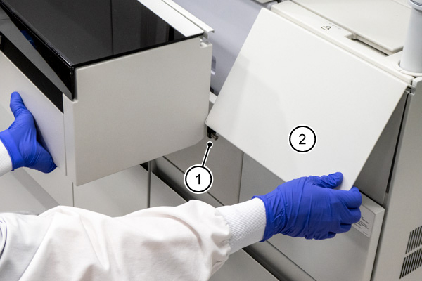

Replacing the Sample Presentation Unit (SPU) Belt
This topic includes information about how to replace the belt in the sample presentation unit (SPU) onload and offload components.
Note: Before you perform this procedure you must turn off the instrument. See
Turning Off the Instrument for more information.
Safety Reminder
Servicing the DxI 9000 instrument involves potential risks for pinch and puncture, electrical shock, and exposure to hazardous materials. You must mitigate these risks by taking appropriate countermeasures. See Safety for more information.
| Table of Contents |
|---|
| Recommended Tools |
| Removing the Belt |
| Installing the Belt |
| Alignments |
| Verification |
Recommended Tools
- 2.5mm hex driver,
- 3mm hex driver
Removing the Belt
Perform this procedure to remove the Sample Presentation Unit belt.
- Turn off the instrument. See Turning Off the Instrument for more information.
- Open the instrument cover(s) and carriage if needed.
- Push the Sample Presentation Unit pusher to the far left position to access the belt and carriage connection point.
- Open the Sample Presentation Unit, swinging it away from the instrument.
Note: Lift the swing-out table a few inches to allow the SPU to swing out as illustrated below:

1 Sampler Handler pin 2 Swing out table Note: The swing-out table is not available in later models of the DxI 9000. For analyzers without a swing-out table, proceed to the next step - Open the Sample Presentation Unit covers.
- Carefully remove the tensioner pulley by removing QTY 2 (2.5 mm) screws.
Caution: The springs are compressed and can shoot out from instrument.
- Remove belt from the carriage.
Installing the Belt
Perform this procedure to install the Sample Presentation Unit belt.
- Install the new belt by routing it through the channel, leaving the end of the belt looped around the motor pulley.
- Slide the new belt into attachment point on the carriage.
- Re-install tensioner pulley by fastening QTY 2 (2.5 mm) screws.
- Raise the swing-out table a few inches and firmly swing the SPU back into place and latch it. See illustration below for the most efficient hand placement:

Note: The swing-out table is not available in later models of the DxI 9000. - Turn on the instrument. See Turning On the Instrument for more information.
- Perform the Sample Presentation Unit alignment per the service manual. Verify operation of the instrument.
Alignments
Perform alignments. See Aligning the Sample Presentation Unit (SPU) for more information.
Verification
Complete the verification of service repair. See Verification of Service Repairs for more information.